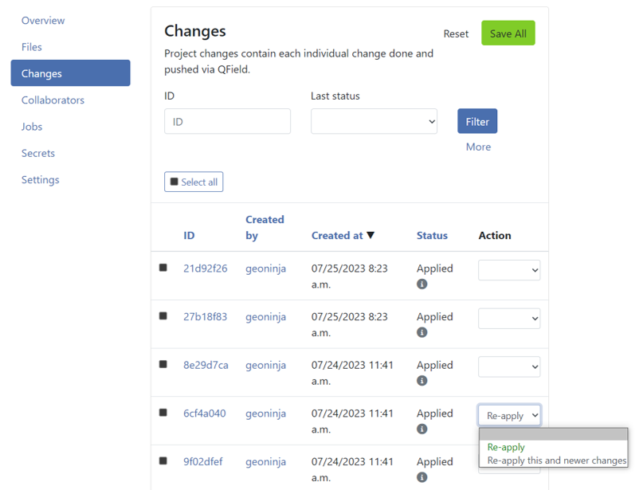

Aufträge¶
Aufträge in der QFieldCloud führen umfangreiche Operationen mit Projektdateien und Layern innerhalb von QGIS durch. Jobs werden als Reaktion auf bestimmte Benutzeraktionen erstellt.
Sobald ein Auftrag erstellt wurde, wird er der Auftrags-Warteschlange des Projekts hinzugefügt und wartet, bis verfügbare QFieldCloud-Ressourcen zur Verfügung stehen. Zu einem bestimmten Zeitpunkt kann nur ein Auftrag pro Projekt ausgeführt werden. Die restlichen Aufträge in der Warteschlange werden in der gleichen Reihenfolge ausgeführt, in der sie in die Warteschlange eingetreten sind.
Jeder Auftrag besteht aus einem oder mehreren Schritten, und jeder Schritt ist für eine eigenständige Aufgabe im Projekt verantwortlich. QFieldCloud unterstützt drei vordefinierte Auftrags-Workflows: process_projectfile, package and delta_apply.
Während der Ausführung schreiben Aufträge Protokollmeldungen, die auf der Auftrags-Projektseite für Aufträge mit dem Status BEENDET oder FEHLGESCHLAGEN zu finden sind.
Aufträge haben Zugriff auf Projektgeheimnisse.
Anmerkung
Alle Aufträge können über die QFieldCloud API ausgelöst werden.
Warnung
- Jede der auf dieser Seite beschriebenen Auslösebedingungen kann sich ohne vorherige Ankündigung ändern.
- Alle Aufträge müssen innerhalb von 10 Minuten abgeschlossen werden, da sie sonst zu einem Zeitüberschreitungsfehler führen und beendet werden.
Info
If you are looking for technical details how Jobs work, check the Job Queue documentation.
Auftragsarten¶
Projektdatei verarbeiten (process_projectfile)¶
Der Auftrag Projektdatei verarbeiten wird verwendet, um Details über die Projektkonfiguration und die Projektlayer zu extrahieren, wie z.B. Projekt-KBS, Layer-KBS, Layernamen, Layergültigkeit usw. QFieldCloud validiert die hochgeladene QGIS-Projektdatei (.qgs/.qgz) sowie die unterstützenden GeoPackages, TIFFs und andere Datenquelldateien. Es validiert auch die Remote-Verbindung zu PostGIS, WFS, WMS und anderen Online-Datenquellen. QFieldCloud öffnet die Projektdatei in einer QGIS-Instanz auf dem Server, um alle notwendigen Informationen zu extrahieren.
Auslöser¶
Dieser Job wird jedes Mal ausgelöst, wenn eine Datei in QFieldCloud hochgeladen wird, es sei denn, mindestens eine der folgenden Bedingungen ist gültig:
- Es wurde noch keine QGIS-Projektdatei (
.qgs/.qgz) hochgeladen. - Die hochgeladene Datei befindet sich innerhalb des
DCIMVerzeichnisses. Es wird davon ausgegangen, dass diese Dateien für die Gültigkeit des Projekts irrelevant sind. - Es gibt bereits einen
Projektdatei_verarbeiten-Auftrag imANSTEHEND-Status.
Problemlösung¶
Ein Projektdatei_verarbeiten-Auftrag kann zu einem FEHLGESCHLAGEN Status führen. Sehen Sie sich die nicht-erschöpfende Liste der Ursachen unten an:
- Die hochgeladene QGIS-Projektdatei (
.qgs/.qgz) ist unlesbar, unvollständig, defekt oder falsch. Versuchen Sie, die QGIS-Projektdatei erneut hochzuladen. - QGIS stürzt nach dem Öffnen der Projektdatei ab. Versuchen Sie, den Layer zu identifizieren, der den Absturz verursacht, indem Sie jeweils einen Layer aus dem Projekt entfernen und die QGIS-Projektdatei erneut hochladen.
Note
Even if a process_projectfile job results in a SUCCESS status, it does not mean the project is properly configured. The SUCCESS status just states the project has been successfully opened and all the needed information has been extracted.
Paket (package)-Auftrag¶
Der Paket-Auftrag konvertiert ein QGIS-Projekt in ein QField-Projekt, auf die gleiche Weise, wie er in QGIS über QFieldSync durchgeführt wird. Der Paket-Auftrag bereitet alle Layer, die zur "Offline-Bearbeitung" markiert sind, in einem einzelnen GeoPackage vor.
Auslöser¶
Dieser Job wird jedes Mal ausgelöst, wenn die Download- oder Synchronisiern-Felder in QField angetippt werden. Es sei denn, mindestens eine der folgenden Bedingungen ist gültig:
- Das Projekt hat noch nie einen
Projektdatei_verarbeiten-Auftrag ausgeführt , der zu einemERFOLG-Status geführt hat. - Es gibt bereits einen
Paket-Auftrag imANSTEHEND-Status. - Das Projekt enthält keine Online-Vektorlayer (PostGIS, WFS usw.) oder das letzte
Paket-Auftragsergebnis warERFOLGund es gab keine Datei-Uploads oder Änderungs-Uploads.
Problemlösung¶
Ein Paket-Auftrag kann zu einem FEHLGESCHLAGEN-Status führen. Sehen Sie sich die nicht-erschöpfende Liste der Ursachen an:
- Das Projekt hat noch nie einen
Projektdatei_verarbeiten-Auftrag ausgeführt , der zu einemERFOLG-Status geführt hat. - Auf einige der Projektlayer kann von QFieldCloud aus nicht zugegriffen werden. Stellen Sie sicher, dass alle Dateien hochgeladen und alle Anmeldeinformationen für Online-Layer (PostGIS, WFS usw.) in der QGIS-Projektdatei gespeichert sind.
(Delta_anwenden)-Auftrag¶
Delta_anwenden-Aufträge sind dafür verantwortlich, alle gepushten QField-Änderungen dauerhaft zu speichern.
Auslöser¶
Dieser Job wird jedes Mal ausgelöst, wenn in QField auf Synchronisieren oder Änderungen übertragen getippt oder auf der Projektseite Änderungen auf Ausstehende Änderungen anwenden geklickt wird. Eine der folgenden Bedingungen muss dafür gültig sein:
- Das Projekt hat nie einen
Projektdatei_verarbeiten-Auftrag ausgeführt, der zu einemERFOLG-Status geführt hat. - Es gibt bereits einen
Delta_anwenden-Auftrag imANSTEHEND-Status.
Problemlösung¶
Ein Delta_anwenden-Auftrag kann zu einem FEHLGESCHLAGEN-Status führen. Sehen Sie sich die nicht-erschöpfende Liste der Ursachen an:
- Mindestens eine der im QGIS-Projekt verwendeten Online-Datenbanken (PostGIS/WFS) hat die Verbindung zurückgesetzt.
- Das Projekt ist zu groß und der Auftrag konnte nicht ausgeführt werden.
- Es gibt versteckte Dateien und Verzeichnisse innerhalb des Projekts, die die normale Arbeit von QFieldCloud verhindern. Versteckte Dateien und Verzeichnisse sind solche, die mit einem führenden Punkt (
.) beginnen.
Understanding conflicts delta_apply jobs¶
Conflicts can occur under the following conditions:
- Two or more users modify the geometry or a specific attribute of the same feature, starting from the same initial value but saving different values.
- A primary key is used more than once.
To minimize the risk of conflicts, follow these best practices:
- Plan updates collaboratively - When updating features based on specific field conditions, assign each user a distinct set of features to edit. Clear planning reduces overlap and potential conflicts.
- Avoid modifying primary keys - Primary keys should be treated as immutable and configured to be read-only. This ensures consistent identification of features and prevents accidental modifications.
- Ensure unique primary keys - Use a truly unique primary key, such as a UUID (
uuid()), to prevent conflicts and ensure data integrity.
By implementing these practices, you can significantly reduce the likelihood of conflicts and maintain consistent data.
How to resolve conflicts?¶
By default, QFieldCloud overwrites conflicts using a last wins policy (the latest patch of changes to the attribute(s) involved in the conflict replaces all earlier patches of changes to these attributes). Alternatively, admins can set a project's conflict resolution policy to manual. Doing so will require the project manager to manually resolve conflicts, picking those to be applied to the project.
- Navigieren Sie zum Abschnitt "Änderungen".
- Filter the changes with the "CONFLICT" status.
- Wählen Sie jede konfliktbehaftete Änderung aus und setzen Sie den Status im Dropdown-Menü "Aktion" auf "Neu anwenden". Wenn alle neuen Änderungen in Konflikt stehen, können Sie alternativ die letzte konfliktbehaftete Änderung auswählen und "Diese und neuere Änderungen anwenden" wählen.
- Überprüfen Sie die Details der Änderungen im Konflikt und klicken Sie am Ende der Seite auf "Alles speichern".
{kind=link}
Änderungen in QFieldCloud erneut anwenden¶
- Klicken Sie unter Meine Projekte auf den Namen des Projekts.
- Gehen Sie zum Abschnitt Änderungen. (Änderungen werden von den neuesten bis zu den ältesten sortiert).
- Suchen Sie nach den Änderungen, die Sie erneut anwenden möchten.
- Klicken Sie auf der rechten Seite in der Spalte Aktion auf die Dropdown-Liste.
-
Wählen Sie die gewünschte Aktion aus, um die Änderungen erneut anzuwenden.
- Bestimmte Änderungen erneut anwenden: Wenn Sie bestimmte Änderungen erneut anwenden müssen, wählen Sie jede Änderung aus, die Sie erneut anwenden möchten, und klicken Sie auf Erneut anwenden.
- Letzte Änderungen erneut anwenden: Wenn Sie es vorziehen, die letzten Änderungen am Projekt erneut anzuwenden, geben Sie die ursprüngliche Änderung an, die Sie wiederherstellen möchten, und wählen Sie dann Diese und neuere Änderungen erneut anwenden aus.
Klicken Sie abschließend auf die Schaltfläche Alle speichern.

{kind=link}
Problembehandlung bei Auftragsprotokollen¶
Beim Ausführen eines Auftrags finden Sie in den Protokollen in der Regel einen Schritt mit dem Namen "Projektlayer überprüfen", der eine Tabelle mit allen Projektlayern und ihrem Status daneben druckt.
Die möglichen Status sind:
- ok - Der Layer wird korrekt in die QFieldCloud geladen.
- ungültiger_Datenanbieter – Der Datenanbieter des Layers ist ungültig. In der Regel werden zusätzliche Informationen in der "Anbieterübersicht" angezeigt.
- ungültiger_Layer - Dieser Fehler sollte sehr selten, wenn überhaupt, auftreten. Die Daten werden korrekt geladen, aber aus irgendeinem Grund meldet QGIS den Layer als ungültig.
Es kann keine Verbindung zum Dienst "{SERVICE}" hergestellt werden¶
QFieldCloud versucht, eine Verbindung zu einem PostgreSQL-Dienst herzustellen, der nicht verfügbar ist. Sie sollten ein neues pgservice-Geheimnis erstellen müssen, damit QFieldCloud eine Verbindung zum PostGIS-Dienst herstellen kann.
Es kann keine Verbindung zum Host "{HOST}" hergestellt werden.¶
QFieldCloud kann keine Verbindung zu dem angegebenen "{HOST}" herstellen. Ihr Dienst ist vom QFieldCloud-Server aus nicht zugänglich. Möglicherweise müssen Sie Ihre IT-Abteilung bitten, die QFieldCloud-IP auf die Whitelist zu setzen.
Es kann keine Verbindung zum Host "localhost" hergestellt werden.¶
Sie haben einen Layer hochgeladen, der eine Verbindung zu einer Datenbank/einem Dienst auf Ihrem lokalen Computer herstellt. Entfernen Sie entweder diesen Layer oder ersetzen Sie ihn durch einen Layer, auf den QFieldCloud zugreifen kann.
Datei "{FILENAME}" fehlt.¶
Die Datei {FILENAME} (z.B. /tmp/rndstr/files/data.gpkg) wird nicht auf dem QFieldCloud-Server gefunden und kann nicht geöffnet werden. Es gibt zwei Dinge, die überprüft werden sollten:
- Sie können auf der Seite Projekteinstellungen -> Dateien in QFieldCloud oder QFieldSync überprüfen, ob die Datei in die Cloud hochgeladen wurde.
- Stellen Sie sicher, dass die Datei mit demselben relativen Pfad wie auf Ihrem PC hochgeladen wird. Bitte beachten Sie, dass sich alle Projektdateien im selben Projektverzeichnis oder Unterverzeichnis wie die
.qgs/.qgzQGIS-Projektdatei befinden sollten. Bitte beachten Sie auch, dass die Verzeichnisnamen ebenfalls beibehalten werden sollten, z. B. wenn eine Datei inDatendata.gpkg, gespeichert ist, stellen Sie sicher, dass dasDaten-Verzeichnis auch in QFieldCloud vorhanden ist.